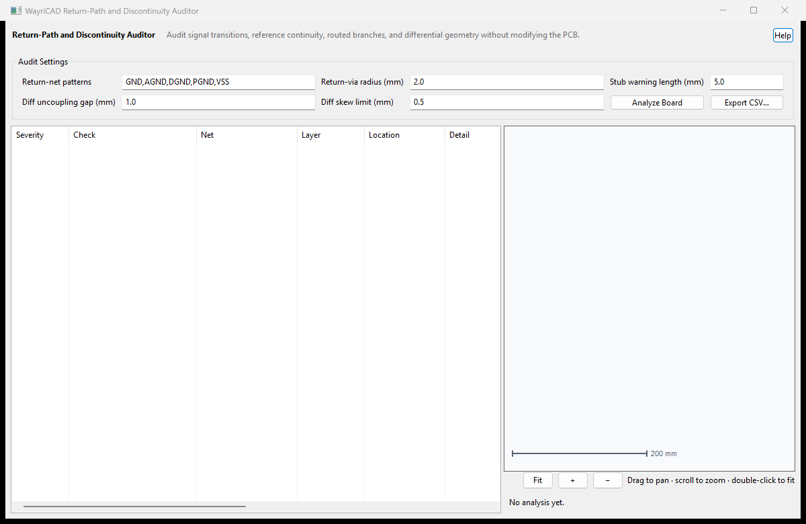

Signal transitions without a nearby configured return via, segment midpoints outside supplied return-plane regions, and long branches leaving routed nodes with more than two connections.
This is not a field solver. Zone coverage uses conservative geometry and cannot prove reference continuity through stackup transitions. Resolve and visually inspect findings before signoff.
If no findings appear, confirm the board is routed and the return-net tokens match actual net names. Reopen the plugin after major board changes.